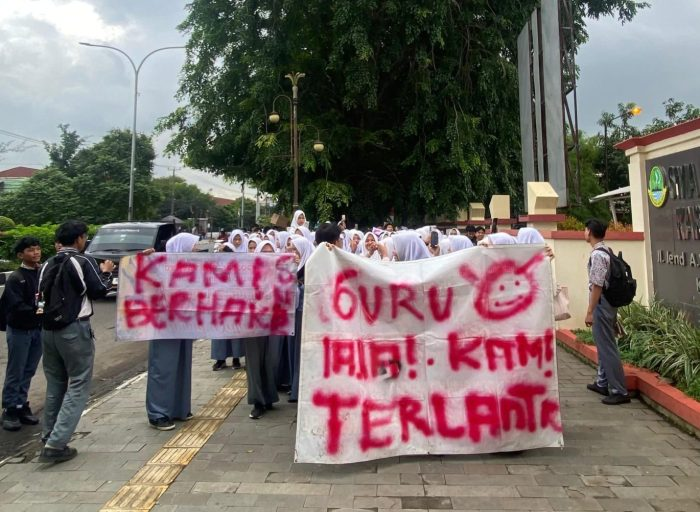
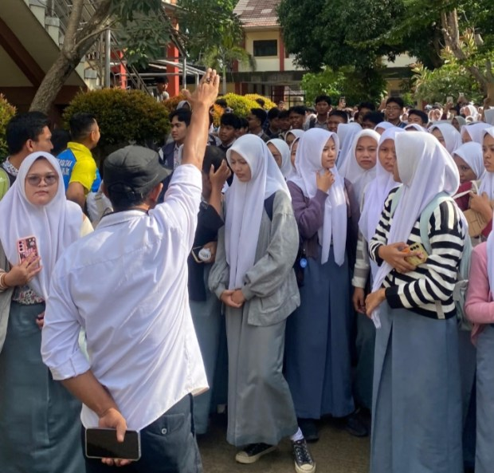
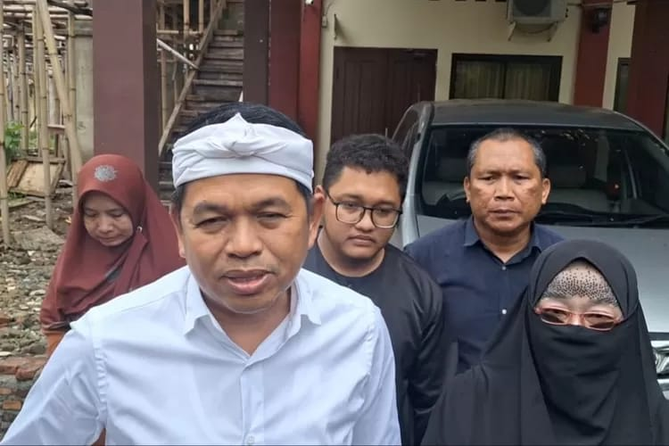

Kasus Kelalaian PDSS SMAN 4 Karawang, 141 Siswa Gagal SNBP
Diposting pada: 14 Februari 2025
Pada awal Februari 2025, sebanyak 141 siswa SMAN 4 Karawang gagal mendaftar Seleksi Nasional Berdasarkan Prestasi (SNBP) akibat kelalaian sekolah dalam mengisi Pangkalan Data Sekolah dan Siswa (PDSS). Hal ini menyebabkan kekecewaan mendalam bagi para siswa dan orang tua.
Kronologi Kejadian
Proses pengisian PDSS seharusnya dilakukan oleh sekolah pada periode 6 hingga 31 Januari 2025. Namun, hingga batas waktu tersebut, SMAN 4 Karawang belum menyelesaikan pengisian data tersebut. Akibatnya, ratusan siswa yang memenuhi syarat tidak dapat mengikuti SNBP tahun ini.
Reaksi Siswa dan Orang Tua
Kejadian ini memicu protes dari siswa dan orang tua. Mereka menggelar unjuk rasa di halaman sekolah, menuntut pertanggungjawaban dari pihak sekolah atas kelalaian tersebut. Salah satu orang tua siswa menyatakan kekecewaannya karena anaknya telah bekerja keras selama bertahun-tahun untuk mendapatkan jalur masuk perguruan tinggi melalui nilai rapor, namun gagal akibat kelalaian sekolah.
Penjelasan Pihak Sekolah
Kepala SMAN 4 Karawang, Dida Siti Saadah, mengakui kelalaian tersebut. Ia menyebutkan bahwa waktu yang diberikan untuk pengisian PDSS dirasa kurang, dan jumlah admin yang terbatas menjadi kendala utama. Selain itu, gangguan jaringan serta ketidaksesuaian data Nomor Induk Siswa Nasional (NISN) dan Nomor Induk Kependudukan (NIK) juga menjadi hambatan dalam proses pengisian data.
Tanggapan Pemerintah Daerah
Menanggapi kejadian ini, Gubernur Jawa Barat terpilih turun tangan untuk mencari solusi. Ia menyatakan bahwa kasus serupa tidak hanya terjadi di SMAN 4 Karawang, tetapi juga di beberapa sekolah lain di daerah tersebut. Pemerintah daerah berupaya mencari solusi agar siswa yang terdampak tetap memiliki kesempatan untuk melanjutkan pendidikan ke jenjang yang lebih tinggi.
Kesimpulan
Kasus kelalaian pengisian PDSS di SMAN 4 Karawang menjadi pelajaran penting bagi institusi pendidikan untuk lebih teliti dan tepat waktu dalam menjalankan prosedur administratif. Diperlukan kerjasama antara pihak sekolah, pemerintah, dan orang tua untuk memastikan kejadian serupa tidak terulang di masa mendatang.